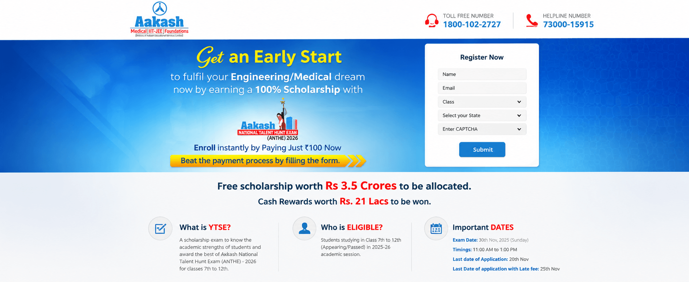
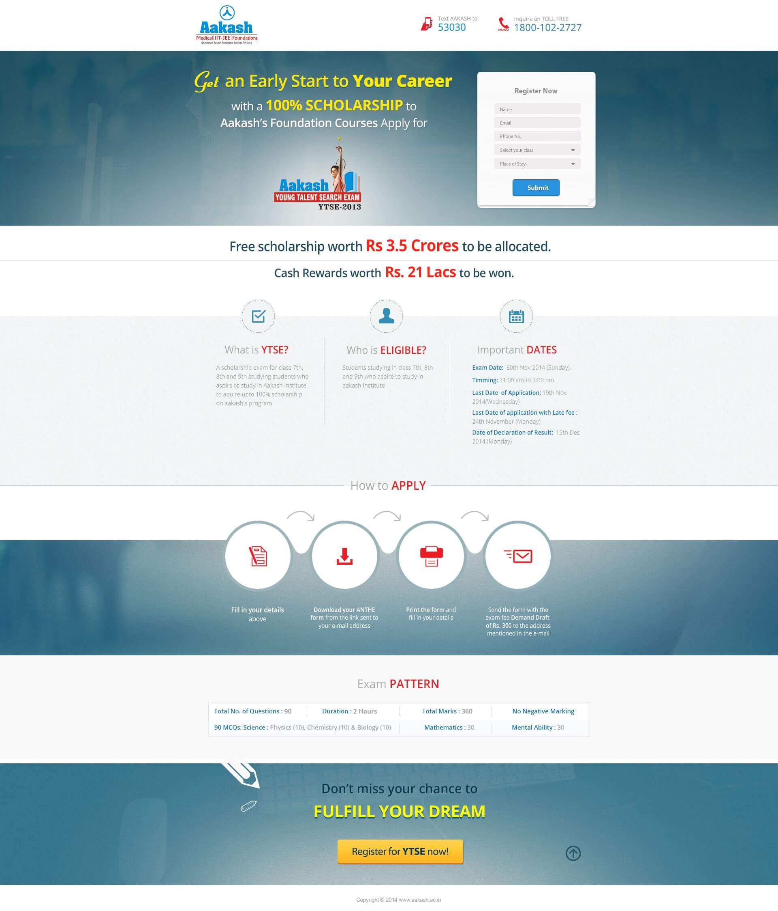
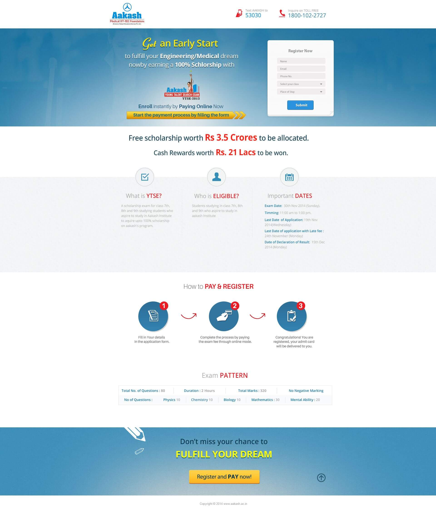

Eligibility, scholarship value, dates, exam pattern and application steps all needed to remain easy to scan.
← Back to workFour campaigns.
Aakash · Scholarship Acquisition Campaign
Four campaigns.
One faster route to opportunity.

Project overview
Scholarship interest.
Converted into completed action.
Aakash scholarship programmes help students compete for fee support and begin structured preparation for medical, engineering and foundation pathways.
Mad Men created four campaign applications—GOSF, ANTHE, Satyamev Jayate and Aakash 50% Cashback—and promoted them through social media with mobile-friendly registration journeys.
- Campaigns
- Four Applications
- Core Journey
- Register + Pay
- Distribution
- Social Media
- Priority
- Mobile Usability
The challenge
Hold the aspiration.
Remove registration friction.
Four promotional ideas required distinct campaign hooks without fragmenting the Aakash experience.
The campaign suite
Four entry points.
One acquisition system.
Seasonal digital opportunity
GOSF
National scholarship platform
ANTHE
Purpose-led participation
Satyamev Jayate
Offer-led conversion
50% Cashback
The application experience
From form-led registration
to instant online payment.
Two interface routes show the evolution of the journey: capture interest and support offline completion, or let students register and pay in one connected flow.


The mobile journey
Every screen answers
the next question.
- 01
Why apply?
Lead with scholarship opportunity and future ambition.
- 02
Am I eligible?
Make class, dates and requirements immediately visible.
- 03
How does it work?
Explain the exam pattern and process in visual steps.
- 04
What next?
Keep registration and payment actions prominent.
Design principles
Dense information.
Clear hierarchy.
Registration remains visible from the first screen to the final prompt.
Value, eligibility, process and pattern appear in decision order.
Short fields and direct actions reduce effort on smaller screens.
Aakash identity, contact access and exam information stay present.
The outcome
Campaign flexibility.
One coherent student journey.
The four applications gave Aakash multiple promotional routes while maintaining a consistent, mobile-friendly path from social discovery to scholarship registration.
Four campaign apps
Distinct propositions supported different promotional moments.
Mobile accessibility
The journey remained usable across smaller screens and social traffic.
Action clarity
Registration and payment stayed central throughout.
Aspiration at the top.Action at every step.
Have an audience ready to act?